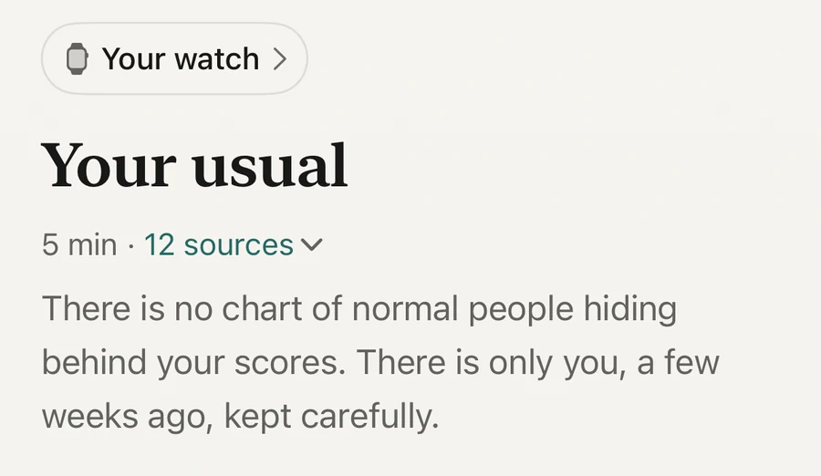

Comparison · Longevity

Both turn what your watch records into an age you can set beside your calendar age. Apple's Health Age sits in the redesigned Health app. On 16 November 2026 it was in the iOS 27.3 developer beta, due as a free update later this year. It needs an Apple Watch and an iPhone that runs Apple Intelligence, and German and Hungarian are not among its languages yet. Aera's body age is on the App Store now, shows how many months or years each part adds or takes off, and speaks German and Hungarian. You do not have to choose: Aera reads Apple Health, so both can sit on the same phone.
Health Age is Apple's own estimate of how your body is ageing. It is the central number in a new Longevity tab of the redesigned Health app, which Apple first showed on 9 September 2026. Apple says it translates Apple Watch data, including VO2 max, resting heart rate, sleep and heart rate variability, into an age, and that you can add lab results such as A1c and LDL cholesterol.
On 3 November 2026 Apple said the new Health app is in the iOS 27.3 developer beta and will reach everyone as a free software update later this year. Health Age requires an Apple Watch, and the app runs on iPhone and iPad models that support Apple Intelligence, with the latest software. Apple's list of languages for the new app is global English, Chinese (Simplified and Traditional), French, Japanese, Korean, Norwegian, Portuguese, Spanish, Turkish and Vietnamese, and Apple adds that some features may not be available in all regions or languages.
Apple's announcement does not say how much each signal counts. It is in beta, so details can still change before it ships.
Aera is an iPhone and Apple Watch app that works out a body age on your iPhone from what Apple Health already holds, mainly cardio fitness (VO2 max), active minutes, resting heart rate, time asleep, sleep regularity and daily steps. Each part is set against published values for your age and sex, and the screen shows how many months or years each part adds or takes off. If you have a home blood pressure cuff that saves to Apple Health, or you measure your waist, you can add those too.
It reads your last weeks again every Monday, so one quiet or busy week moves it only a little. It never lands more than nine years from your calendar age, and with little data it leans toward your calendar age and says how sure it is. Every part opens a short note on how it was worked out and where it stops being reliable, with its sources.

How far, how many parts, how sureThe sheet gives the gap to your calendar age, how many parts count and how sure Aera is. A part with no data is left out, not guessed.
| Apple Health Age | Aera body age | |
|---|---|---|
| Where | Longevity tab of the redesigned Health app | The Aera app, reading Apple Health |
| When | iOS 27.3 developer beta; free update due later in 2026 | On the App Store now |
| Needs | Apple Watch, and an iPhone that runs Apple Intelligence | An iPhone; works best with an Apple Watch, which records VO2 max and heart rate |
| What it reads | VO2 max, resting heart rate, sleep, HRV; lab results such as A1c and LDL if you add them | Mainly cardio fitness, active minutes, resting heart rate, time asleep, sleep regularity and steps; home blood pressure and waist if you add them |
| Shows each part's share | Not said in Apple's announcement | Yes, in months or years for each part |
| German and Hungarian | Not in Apple's list of 3 November | Yes, both |
| Cost | Free with the update | Today's body age and its last 30 days free; older months with Premium |
| Account | Your Apple Account | None |
Neither is a medical test. A watch sees nothing of blood sugar, cholesterol, family history or smoking unless you add them, and a good number is not a clean bill of health.

A note behind every numberEach score opens a short article that shows how it was worked out, where it stops being reliable, and the studies behind it.
Aera, for iPhone and Apple Watch
Aera works out your body age, sleep, stress and training load on your iPhone from Apple Health, sets each against your own usual, and explains every number. There is no account. It also replays your runs, walks and rides in 3D over the real ground.
Body age is an estimate for everyday wellbeing, not a medical age. Aera is not a medical device.
Apple said on 3 November 2026 that the redesigned Health app, with Health Age, is in the iOS 27.3 developer beta and will roll out as a free software update later this year.
Yes. Apple says Health Age requires Apple Watch, and the new Health app runs on iPhone and iPad models that support Apple Intelligence.
Not at first. Apple's language list of 3 November 2026 is global English, Chinese, French, Japanese, Korean, Norwegian, Portuguese, Spanish, Turkish and Vietnamese.
Yes. Aera reads Apple Health, so the two sit side by side on one phone. Expect them to differ by a few years and follow one over time.
Related guides: What does a biological age from your watch mean? · Bevel, Athlytic or Aera · Apple Watch VO2 max: how accurate is it?
 Or scan with your iPhone
Or scan with your iPhoneFree to start. No account. Works with the watch you already wear.